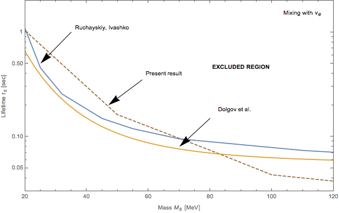

{kind=link}
Project outline
- What particles can influence the primordial nucleosynthesis?
- Models considered
- Sterile neutrinos generation and decoupling
- Sterile neutrinos streaming and decay
- Neutrinos, neutrons decoupling and nucleosynthesis setup
- Nucleosynthesis
Status
Currently the code does not model the whole range of the parameter space accurately. In the beginning of June the situation was the following:

Since then, many changes were made to improve those results and ensure that the code is reliable in the region of higher masses:
- Added effective number of neutrinos and sterile neutrino density monitors to be sure that particles decay properly (before numerical effects caused them to remain at some constant density and eventually dominate the energy density of the system)
- Three-particle integral was checked to produce correct exponential decay for sterile neutrinos
- Resting particles (with zero momentum) were included to the system as they are crucial for the non-relativistic distributions and bigger masses
- Gaussian-Legendre quadrature was replaced by Lobatto quadrature which evaluation points include both ends of the integration region (important as well for non-relativistic distributions)
- Particle species were allowed to have different integration grids to be able to save computation time and tune the precision for different particles
- Another grid type was implemented to account for three-particles interactions kinematics. Turns out that the thermal width of the collision integral peak only grows with time and, as it's position is known at any point, it is possible to construct a grid that will always have a given number of points at the peak's position (up to entropy non-conservation effect that can change the width of the peak by a factor of ~2)
- Additionally, to fully capture the effects of sterile neutrinos decay on active neutrinos, the last momentum sampling point of their distribution should be at the position of the peak at the last moment when sterile neutrinos are still in significant abundance. For simplicity, this moment is taken to be
Probable causes of the errors:
-
Not sufficient control of precision of final elements abundances. Most of the control on the computation happens at the Python code, while KAWANO is responsible for the final result. This code has a number of principal differences from the older C++ version -- most notably, logarithmic time integration grid. This grid allows to do much less integration steps, but the step size at the given temperature now depends on the starting temperature of computation.
For large masses of sterile neutrinos, the typical decoupling temperature increases, so the step size of the data used by KAWANO effectively increased.
-
Error in the KAWANO code. Original KAWANO code infers the baryon-to-photon ratio during the run. To account for non-equilibrium effect, a number of sampled input parameters were introduced to the initial conditions of KAWANO. However, baryon-to-photon ratio was still calculated on the still. This resulted in a random final value of baryon-to-photon ratio. To fix it at the observed level a few other runs with parameters finetuning were required.
To fix this problem, I modified the KAWANO code to be aware that baryon-to-photon ratio depends on the temperature curve given in the data. Now baryon-to-photon ratio always ends up being equal to
6e-10-- this makes the computation more consistent overall.However, I've noticed a slight difference in the speed of convergence to the final value by the old version of modified KAWANO code and my version. Here's an example of my version's output
Temp eta ----------------------- 1.000E+02 1.650E-09 4.645E+01 1.649E-09 1.940E+01 1.640E-09 8.486E+00 1.596E-09 4.516E+00 1.476E-09 2.676E+00 1.245E-09 1.705E+00 9.535E-10 1.213E+00 7.540E-10 9.787E-01 6.711E-10 8.456E-01 6.363E-10 6.750E-01 6.098E-10 3.230E-01 6.000E-10 1.380E-01 6.000E-10 7.846E-02 6.000E-10 4.266E-02 6.000E-10 1.781E-02 6.000E-10 9.952E-03 6.000E-10
For the older version
etaconverges a bit slower, but no systematic comparison was performed. -
It is possible that my account of pions is completely wrong. I consider pions to be very short-lived or electrically charged, so their production during decays of sterile neutrinos does not influence on the equilibrium distribution. I do not compute the collision integral for them, so all entropy of pions go directly into photons, increasing their temperature.
This approach seems to be reasonable, but still can be considered questionable without additional investigation into these matters.
Plan
To finish my master thesis in time and graduate, I need to fix those problems by the end of July. I am going to write the thesis while looking into the problems mentioned above.
-
Week 1:
- Determine the step size required by KAWANO code to produce stable results
- Determine the accuracy of the most significant tests depending on grid spacing and time step size
- Split all test runs into 2 temperature ranges with different time step sizes (I already made sure that this split does not introduce discontinuities in system parameters)
- Run all tests to determine the current status
-
Week 2:
- Take a look at KAWANO code again and test my modifications
- Run tests again
-
Week 3:
- Finish the thesis with whatever results I have
- Get feedback on the text and send it to reviewers
-
Week 4:
- Graduate
If I will have some time, I will consider the pion problem too. After graduation I am free to change the direction of this research in any direction.